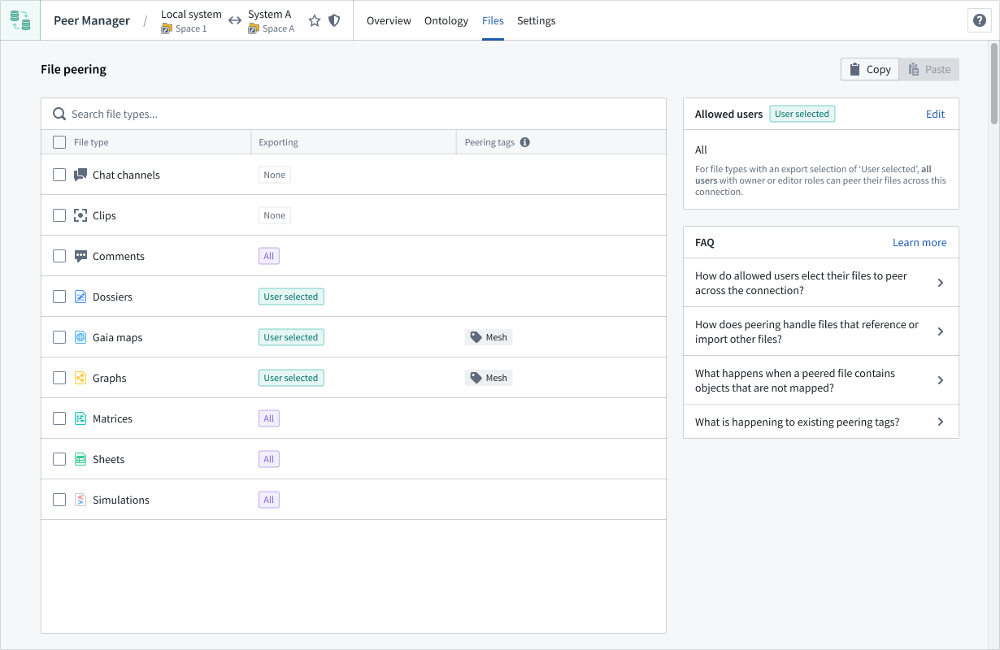
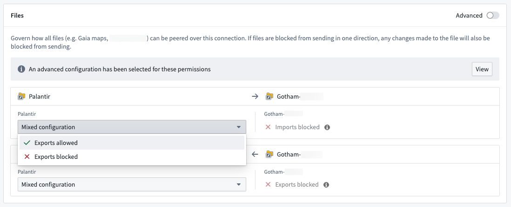
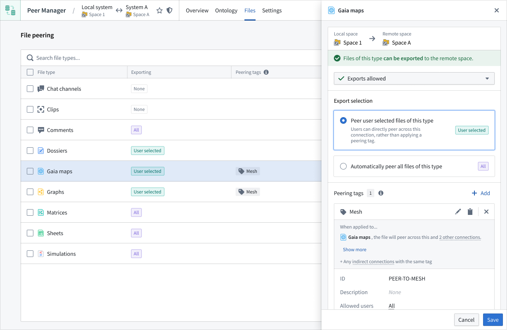

After you establish a peering relationship between two spaces, you can use Peer Manager to configure file peering. File peering enables you to synchronize Gotham files, such as Gaia maps, between your enrollment and another across a peer connection.
:::callout{theme="neutral"}
To peer files between spaces, your enrollment must use both Foundry and Gotham.
Contact Palantir Support with questions about Gotham files or their additional documentation present in platform.
:::

Before you are able to peer files across a peer connection, navigate to the connection in Peer Manager and select Settings from the top ribbon to ensure the connection's settings enable file export and import.

Once you configure the peer connection's file export and import settings, select Files to set the desired peer behavior for each file type. Choose a File type from the File peering panel to launch its configuration in a drawer popover on the right side of your screen.
:::callout{theme="neutral"} You must configure file type peering behavior on both the local and remote sides of the peer connection. :::

Within the drawer popover, you can set the file's Export selection to automatically peer all files or only a selection based on an applied tag or temporal parameter.